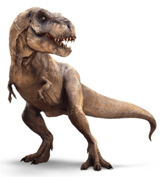
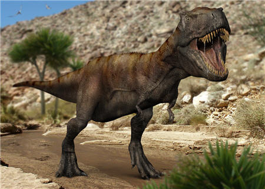

Tyrannosaure (Tyrannosaurus Rex – T. rex)

Le dinosaure Tyrannosaurus Rex, plus connu sous le nom de Tyrannosaure ou T rex, est incontestablement à la fois le plus célèbre des dinosaures, mais aussi celui qui a la réputation d’avoir été le plus féroce d’entre eux.
Le Tyrannosaure était probablement le plus grand dinosaure carnivore. Son nom signifie « Roi des reptiles tyrans ». Il a vécu à la fin du crétacé entre 68 et 65 millions d’années avant notre ère, en Amérique du Nord, en Chine et en Mongolie. Le Tyrannosaure était bipède, pourvu de très petits bras et d’une queue suffisamment longue pour lui servir de balancier.
Il pouvait facilement atteindre 12 à 14 mètres de long, 5 à 6 mètres de hauteur pour un poids fleuretant avec les 7 tonnes.
Le Tyrannosaure avait une énorme tête d’environ 1,5 mètre de long qui abritait une mâchoire des plus impressionnantes, capable de s’ouvrir sur plus d’un mètre, avec une soixantaine de dents parfaitement acérées et pouvant atteindre chacune 18 centimètres de long. Il aurait pratiquement pu engloutir en une seule fois un homme adulte !
Les dents du Tyrannosaure se renouvelaient régulièrement tous les 2 à 6 ans. Il possédait en outre une vue stéréoscopique qui lui permettait d’enregistrer le moindre mouvement sur un champ de vision assez large. Le Tyrannosaure pouvait atteindre la vitesse de 25 km/h avec des enjambées d’environ 3,75 mètres !
L’animal fut décrit et baptisé par Henry Fairfield Osborn en 1905. Mais en fait, les premiers restes significatifs furent découverts en 1902 par Barnum Brown, son apprenti. Cette année-là, il effectue des fouilles dans une crique à Hell Creek dans le Montana et découvre les os d’un grand dinosaure carnivore du Crétacé dont il n’a rien vu de ressemblant jusqu’à présent.
Malheureusement les conditions difficiles du climat et du terrain ne lui permettent de déterrer qu’un os pubien et un fémur. Les os étaient si lourds que Brown fut obligé de construire pour l’occasion un traîneau tiré par des chevaux pour les transporter jusqu’à la route la plus proche. Mais Osborn et Brown n’en restent pas là et en 1905 Brown repart dans le Montana avec plus d’équipements.
Après trois mois de fouilles musclées à la dynamite, il déterre des pattes, quelques os de la colonne vertébrale, l’os du bassin, des côtes, un bras et un fragment de crâne. Le squelette n’est pas complet mais suffisant aux yeux d’Osborn pour nommer une nouvelle espèce et il décrit ce gros dinosaure sous le nom de Tyrannosaurus Rex.
Dans le New York Times, Osborn écrivit alors que « Ce nouveau dinosaure a été déclaré le roi des rois dans le domaine de la vie animale. C’est le monstre le plus agile de sa génération, une machine à tuer qui règne sur ses voisins végétivores pourtant deux fois plus grands que lui ».
Des découvertes récentes de squelettes entiers, en 1988 au Montana et en 1990 dans le Dakota du Sud, ont fait considérablement évoluer notre connaissance du Tyrannosaure. A ce jour, plus d’une quinzaine de spécimens fossilisés ont été découverts.

Le Tyrannosaure était suffisamment résistant pour marcher toute une journée à une vitesse de 8 km/h à la recherche de nourriture. Un Tyrannosaure adulte mâle pouvait sans doute contrôler un territoire d’un millier de kilomètres carré.
Le mode de vie du Tyrannosaure est en revanche très mal connu et fait actuellement l’objet de controverses : on ne sait pas s’il chassait seul ou en groupe, ni quelles étaient ses proies préférées, bien qu’on suppose qu’il s’agissait surtout de grands dinosaures végétivores.
Certains paléontologues affirment que, contrairement à l’idée établie que le Tyrannosaure était un redoutable prédateur, celui-ci n’était en fait qu’un charognard opportuniste.
Cette controverse provient d’une anomalie dans sa morphologie : cet animal, haut de plus de 5 mètres pour un poids avoisinant les 7 tonnes ne possédait des bras guère plus grands que ceux d’un homme (moins de 1 mètre de long). La raison à cela est sans doute très simple : à cause de son poids, le Tyrannosaure a trouvé le bon équilibre tout au long de son évolution.
Sa queue faisait office de contre balancier, et petit à petit ses bras se sont raccourcis, faute de quoi, il aurait tout simplement piqué du nez. Les deux bras du Tyrannosaure ne pouvaient pas se toucher entre eux ni même atteindre la mâchoire, il est donc pratiquement impossible qu’il ait pu attraper ou maintenir une proie avec ceux-ci.
Les partisans du comportement charognard ont de plus élaboré une théorie sur la fragilité dentaire du tyrannosaure. En effet les longues dents de celui-ci n’auraient pas pu résister à des attaques de proies vivantes.
Les partisans du comportement prédateur opposent de nombreux arguments. En dépit de leur petite taille, les bras du Tyrannosaure étaient très puissants et d’après certaines études ils pouvaient soulever jusqu’à 250 à 300 kg. On suppose également qu’il pouvait déplacer l’une de ses maxillaires vers l’arrière pour découper ses proies à l’aide de ses dents très acérées.
D’autre part, les dents du Tyrannosaure étaient vraisemblablement plus solides qu’on ne l’avait imaginé car l’usure constatée sur des dents fossilisées indique qu’il mâchait des aliments relativement durs. De plus, certains paléontologues pensent que la présence de surfaces crâniennes inhabituellement grandes derrière les yeux du tyrannosaure, avaient pour fonction de loger des muscles masticateurs extrêmement puissants.
Par ailleurs, la dimension des zones du cerveau associées aux sens de la vue et de l’odorat plaiderait également en faveur d’un comportement prédateur.
Le débat reste donc ouvert, et il n’est pas exclu que le tyrannosaure ait été à la fois prédateur et charognard…